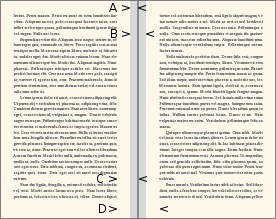
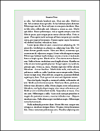

Documentation for novel document class
Documentation version: 1.38.
4. Book Size and Page Layout
Overview
There are many layout settings available, but you do not have to use them all. In fact, you may not need to use any of them! Your novel is pre-configured with settings that will often be suitable for the 5.5"W x 8.5"H Trim Size that is widely used in the American softcover fiction market.
If you choose a different Trim Size, then some of the other defaults will be tweaked, so that your starting point is reasonable for the requested size.
This page begins with a review of phyysical book design, then continues to the novel commands that set the dimensions.
4.1 Book Design Terminology
If you are preparing a PDF for the print-on-demand (P.O.D.) market, and I assume you are, then you need to understand how terms are used in the novel document class (and LaTeX in general). Sadly, most authors in P.O.D. use an ordinary word processor, particularly MS Word. For that reason, many print services, and most online user forums, refer to the terminology and settings of MS Word, rather than to the meanings in traditional book publishing. In the case of images, Photoshop settings are often described. And, the more advanced authors may be using InDesign. Yes, there are authors using LaTeX and GIMP (I am among them), but they are not the ones who make the most noise. If you visit web sites and forums devoted to LaTeX, they primarily address the concerns of academic writers, particularly mathematicians, because that is the target user base for LaTeX.
Here, I will present a brief overview of what key terms mean. In some cases, I will also describe how the same terms mean different things, to those who use other software. Pay attention!
4.1.1 Sheet, Page, Leaf, Folio, Imposition
A sheet of paper is a single, physical piece of paper, regardless of whether anything is printed on it, or where. Often, paper starts out as a large sheet that will subsequently be cut into smaller sheets. The size doesn't matter. A sheet of paper is, in ordinary understanding, a piece of paper.
 In a finished book, a page is one side of a leaf. Thus, there are always exactly twice as many pages are there are leaves. From the manufacturer's point of view, a 240-page (double-sided printing) book has 120 leaves, regardless of whether or not anything is printed on the pages, or how they are numbered.
In a finished book, a page is one side of a leaf. Thus, there are always exactly twice as many pages are there are leaves. From the manufacturer's point of view, a 240-page (double-sided printing) book has 120 leaves, regardless of whether or not anything is printed on the pages, or how they are numbered.
If you take a sheet of 8.5" x 11" paper, and fold it in half across its width, you create a folio, consisting of one sheet of paper (as before), two leaves (previously one), and four pages (previously two), sized 5.5" x 8.5". Now, think about how those four pages must be numbered. Page 1 and page 4 are printed on the same side of the sheet, with pages 2 and 3 on the opposite side of the sheet. This is not the order they would be printed, if you were merely shrinking the text so that twice as much fit on one side of the sheet. The process of re-arranging the pages, and placing them in the correct positions (often involving rotation) is called imposition. Your home printer can do it, for the simple example described. But in the case of commercial book preparation, the imposition process is much more involved, and uses advanced software.
Caution, The term "folio" has several different meanings, even in the narrow field of book publishing. It may refer to folded paper, as mentioned above. Or it may refer to a particular sheet size of paper ("foolscap"). Or, it may simply refer to the number printed on a page. This last use of "folio" will be discussed in the context of headers and footers.
4.1.2 Page Spread, Recto, Verso, Line Grid
 When a book is opened somewhere in its middle, you see a page spread. At right is the recto odd-numbered page, and at left is the verso even-numbered page. With continuous text, the lines of text on the verso must be in the same vertical position as the lines of text on the recto, and each line must be equally spaced. This is the line grid. Maintaining a proper line grid is essential to the
When a book is opened somewhere in its middle, you see a page spread. At right is the recto odd-numbered page, and at left is the verso even-numbered page. With continuous text, the lines of text on the verso must be in the same vertical position as the lines of text on the recto, and each line must be equally spaced. This is the line grid. Maintaining a proper line grid is essential to the novel class, and is why some novel commands differ from how they are used in academic works with other document classes.
4.1.3 Perfect Binding, Spine, Signature
 Most modern softcover books (and some inexpensive hardcovers) are manufactured using a process named Perfect Binding. The finished book has individual foils, glued together at the spine. There are several stages to the process. First, the books is subdivided into a number of signatures, each of which is a group of folios (typically 1 or 6 folios per signature). The imposition software calculates which page goes at which position on each folio, and also tweaks the positions to allow for the slight displacement of each folio, due to paper thickness. In each signature, the folios are like nested V. The signatures are clamped together in a block. Then the folded area is removed by a machine, so that there are no longer any signatures or folios, just individual leaves. Finally they are glued together, possibly with a reinforcement, and the cover is attached.
Most modern softcover books (and some inexpensive hardcovers) are manufactured using a process named Perfect Binding. The finished book has individual foils, glued together at the spine. There are several stages to the process. First, the books is subdivided into a number of signatures, each of which is a group of folios (typically 1 or 6 folios per signature). The imposition software calculates which page goes at which position on each folio, and also tweaks the positions to allow for the slight displacement of each folio, due to paper thickness. In each signature, the folios are like nested V. The signatures are clamped together in a block. Then the folded area is removed by a machine, so that there are no longer any signatures or folios, just individual leaves. Finally they are glued together, possibly with a reinforcement, and the cover is attached.
If you order your book in hardcover, it is likely to use a similar production method, but with harder covers. So, don't think that your hadcover book will be like the expensive reference books you see in the library. Those books use a different, and much more expensive, binding method.
4.1.4 Gutter
 To allow for the fact that most binding cannot be opened flat, the spine edge of each page must have an allowance for the loss of visible area there. The word gutter is used in this context.
Alas, some folks use gutter to mean the extra allowance for each page; others use it to mean the combined allowance for a two-page spread; and others use it to mean the full spine-side margin from the text, which is a larger value. So if you read about the gutter from different sources, the numbers may not make sense, because the word is being used with different meanings. It could be any of A, B, C, or D in the accompanying diagram. I won't be using the term, except indirectly.
4.1.5 Trim Size, Margins, Live Area
 Trim Size is the finished size of your book, width and height (but not thickness). In the case of hardcover books, where the cover is larger than the contents, it is (usually) the cover size that is measured, with the internal trim size being slightly smaller than nominal
Trim Size is the finished size of your book, width and height (but not thickness). In the case of hardcover books, where the cover is larger than the contents, it is (usually) the cover size that is measured, with the internal trim size being slightly smaller than nominal
In the USA, 5.5" x 8.5" is often used for softcover fiction. This is the default setting in novel. It seems to be the case that nonfiction prefers the slightly larger 6" x 9" trim size. Both of these are known as "trade" sizes.
Margins are required on all four edges of the page. They do not have to be the same width. Generally the margin at the spine edge (inside margin) is wider.
The accompanying illustration shows a typical recto page, on a layout with header and footer. The margins have been shaded gray in the picture (but, not in the book). The inside (spine) margin is at the left of this page. In the case of fiction, where there are no marginal notes, it is typically the case that the inside margin is the widest. But this is not a rule for all books. All that is required is that each margin be "wide enough" for the printing process.
Keep in mind that the print services are not used to seeing books with exotic margins (such as bottom margin twice the size of top margin). They may think that there is a mistake in your PDF, or in the print job, if you do that.
The header and footer, along with the textblock, are in the live area bounded by the margins.
Normally, your TeX document will be compiled to a PDF that is electronically at the exact Trim Size. And normally, print services want it to be that way. When you view your PDF, the text will shift from side to side as you move through the pages, due to the slightly increased margin at the spine edge.
4.1.6 Media Size, TrimBox
 In a few cases, the commercial printer will request that the PDF page size be something larger than the Trim Size of your book. In PDF terminology, the larger dimensions are the Media Size. Typically, the Media Size will be U.S. Letter, or A4, and the Trim Size must be floated in the center, horizontally and vertically. As an alternative, the Trim Size will be at the edge. Something of the sort happens when you print a copy of your PDF at home, where your printer's paper tray has letter or A4, not the Trim Size.
Unless you explicitly set it to a different value, Media Size will automatically be set at Trim Size. Do not use a different Media Size, unless the commercial printer requests it.
Since your PDF is being prepared for commercial print production, it will have an invisible TrimBox automatically encoded. This information tells the printer where the Trim Size is located. If (as usual) the Trim Size and Media Size are identical, then the TrimBox is the full size of the PDF page. But when the Trim Size is smaller than the Media Size, the TrimBox defines where the paper will be trimmed. Although it is not normally marked on the PDF page and never appears in print, some PDF viewers allow you make the TrimBox visible.
In the accompanying diagram, the TrimBox is shown as a faint green line. The margins, shaded gray, are measured relative to the Trim Size, not relative to the Media Size. The excess area beyond the Trim Size is "wasted paper" that will not become part of the book.
4.1.7 Arrrgh... Word Processors
Alas, it seems to be the case that in the print-on-demand market, most PDF files come straight from MS Word or some other word processor. The authors have little understanding of the technology, so the print services provide them with instructions that specifically pertain to a word processor. It gets worse: If you communicate with the print service, your question may be answered by someone who has never used any software other than MS Word, and does not know much beyond how to make menu choices in that program (which are different for each new version of the software, of course). Or, a more informed advisor might know InDesign.
In such a case, for a 5.5" x 8.5" book Trim Size with 0.5" margins at top, outside, and bottom, and 0.75" at the spine edge, you might be offered advice like this: On page size 8.5" x 11" with mirror-margins layout, set the top and bottom margins to 1.75", the outside margin to 2", and the inside margin to 2.25". That advice means: Media Size 8.5" x 11". Unspecified Trim Size, but the printer knows you want 5.5" x 8.5" because you signed up for it; someone at the receiving end will add that instruction to your PDF file. The MS Word "margins" are the actual TeX book margins plus the trimmed-away paper that surrounds the Trim Size.
So, be alert. And remember that even if you are reading advice on a TeX-oriented forum, the advice is likely to pertain to some other document class. The way that dimensions are set in novel may not be the same as the way they are set in other classes.
4.2 Layout Commands
Now that you understand how the terms are used, you are ready to use novel layout commands.
Remember that everything is pre-configured, specifically for the purpose of fiction. You only need to write a layout command if you don't like the defaults.
4.2.1 \SetTrimSize{width}{height}
Command \SetTrimSize{}{} sets the size of your book. Both values must be written, using units such as in or mm. If you do not use this command, the default Trim Size will be the widely-used 5.5in wide x 8.5in high.
This setting is most crucial. Unless your book is very exceptional, its Trim Size will be one of several standard sizes available from the print service. Among those sizes, only one or two will be "standard" for your genre.
Do not request a mass-market paperback size unless you really, truly, know what you are doing. Since you are not a major writer for a major publishing house, you don't know; so, don't do it.
In the U.S.A., a Trim Size of 5.5"W x 8.5"H is widely used for print-on-demand fiction, with a slightly smaller size being a second choice. The larger 6"W x 9"H is more often used for non-fiction. If you also intend to have a hardcover edition, then that may affect your choice for softcover as well (but see the \Rework commands, below). Be aware that in your market, hardcover books are not like the ones you see in the library, which use a more expensive binding method.
4.2.2 \SetMargins{top}{outside}{bottom}{inside}
 Mnemonic: "TOBI, or not TOBI, that is the question."
Mnemonic: "TOBI, or not TOBI, that is the question."
When you choose your book's Trim Size, margins are pre-configured. In most cases, the top, outside, and bottom margins are 0.5", and the inside (spine) margin is 0.75" to allow 0.25" binding clearance. These values are acceptable to most American printers, unless your book is very thick. The largest Trim Sizes have slightly larger margins.
Command \SetMargins lets you choose your own margins. If you use it, all four must be written, using units such as in or mm.
If your book has headers and/or footers, they sit inside the rectangle bounded by the margins. That is, they do not sit inside the peripheral areas cleared by the margins.
Be aware that there is a lot of confusion regarding the word "gutter." In the accompanying diagram, it might mean any of A, B, C, or D, depending on who is doing the talking and which software is in use. The novel class uses inside margin, also known as spine margin, to mean C.
4.2.3 \SetFontSize{length}
In the novel document class, you do not set point size as a class option. Instead you use \SetFontSize in the Preamble.
The size may be any units TeX understands, including decimal values. So, 11.8bp and 12.1pt are acceptable. This is because you will be using scalable, Open Type and TrueType fonts throughout your document. They do not need TeX metrics.
If you insist on using ancient TeX fonts, then you may need to specify a convenient integer font size such as 11pt or 12pt. But why? Forget those fonts! Welcome to the Twenty-First Century.
The minimum normal font size is 8pt, and the maximum is 18bp. On a local basis, text may be larger or smaller than this.
4.2.4 \SetLinesPerPage{integer}
Lines per page refers only to the textblock, and does not include header/footer. Lines are not stretched to fill short pages.
By default, a suitable number of lines per page are set, based on other dimemsions. You can change the default with this command. Any non-integer will be rounded. There is no direct command to set the leading, also known as line-to-line spacing or baselineskip. Instead, is is calculated from the textblock height and number of lines.
If the calculated leading is less than 1.2x the font size, an error will result. It is difficult for TeX to honor all layout settings with such a small leading, which would normally be unacceptable for fiction in any case. If the calculated leading is at least 1.2x the font size, but less than 1.25x the font size, then the log file will have an Alert message, suggesting that you should consider using fewer lines per page. If the leading exceeds 1.4x the font size, then the log will have an Alert, suggesting more lines per page. The Alert messages are friendly; you do not necessarily have to do anything.
4.2.5 \SetHeadFootStyle{number}
 The use of this command is described on Page 6. It is mentioned here, because whether or not your book has headers and/or footers will affect the overall layout. The default is style 1, which has header but no footer (shown here).
The use of this command is described on Page 6. It is mentioned here, because whether or not your book has headers and/or footers will affect the overall layout. The default is style 1, which has header but no footer (shown here).
The pre-defined styles are comprehensive, for use in fiction. It is hard to imagine a header/footer style that is not identical to, or a variation from, one of those styles. But if you do wish to create your own style, you must use \SetHeadFootStyle to choose the closest available style, then use fancyhdr commands for your custom style. The reason is that \SetHeadFootStyle tells the layout engine how much space it needs to reserve.
4.2.6 \SetHeadJump{number} and \SetFootJump{number}
Puzzled by TeX terms such as headsep and footskip? Me too! That's why I rewrote the way that the positions of headers and footers are calculated. Now, you can use easy-to-understand commands that do what you think they ought to be doing.


The head and/or foot "jump" is a multiple of the normal baseline skip. When the jumps are set to 1, the header (if used) will be where the textblock would be, if it had one more line on top. The footer will be where the textblock would be, if it had one more line at the bottom. Values of 2 would skip a line at top and bottom. In other words, integer jumps maintain the line grid.
Actually, the header and/or footer do not need to be on line grid. The defaults are 1.5 for each, which balances the need to separate the header/footer from the text, with the need to avoid wasting vertical space.
The maximum is 3, minimum 1. The two jumps do not need to be identical. If your layout does not have a header and/or footer, then the corresponding setting does not matter.
Don't worry about headheight. Whether you like it or not, headers (if used) will have only one line, and footers (if used) will have only one line. The necessary heights are calculated automatically.
4.2.7 Advanced: \SetMediaSize[alignment]{width}{height}
Normally, the book Trim Size will also set the same size for the PDF pages. What you see is what you get.
Some print services prefer that the Trim Size be floated in a standard paper size, such as US Letter or A4. That's not a technical necessity, but "the way things are done around here." If you must do that, use the \SetMediaSize command.
The width and height must be specified with units, such as in or mm. If the optional alignment is not specified, then The Trim Size will be centered horizontally and vertically in the Media Size. That is the preferred method.
If you write edge for the optional alignment, then the Trim Size will be off-center in the Media Size. Do not do this unless your print service specifically wants it that way. If you are making a hand-made book with a home printer, then this option might be convenient.
Note that margins are measured relative to the Trim Size, not the Media Size. The extra white space between Trim Size and Media Size is just that: extra white space, unrelated to the margins of your book.
For PDF/X compliance, an invisible PDF TrimBox is automatically calculated and written into the PDF file.
The accompanying image shows how this works. Here is the code:
\documentclass[draft,shademargins]{novel}
\SetTrimSize{5.5in}{8.5in}
\SetMediaSize{8.5in}{11in}
\SetMargins{0.5in}{0.5in}{0.5in}{0.75in}
Trim Size 5.5"x8.5" is centered in Media Size 8.5"x11". The shademargins option was used, so that the page margins can be seen. Whether verso or recto, the Trim is centered in the Media. This image is a recto page, which has its slightly-larger inside margin at left of the text. For purposes of illustration, I have drawn the invisible TrimBox with a green line.
4.2.8 Advanced: \SetCropmarkGap{length}
 This command is only effective if you use the
This command is only effective if you use the cropmarks class option. Note that user-provided cropmarks are very unusual in the print-on demand market. Do not use them unless your print service specifically requests them. The built-in cropmark capability is very elementary, and cannot be easily enhanced by adding other LaTeX packages.
In the accompanying image with cropmarks, a corner of the Trim Size is at lower right. The invisible TrimBox has been drawn with a green line. The cropmark gap is G.
4.3  Emergency Clinic: Rework
Emergency Clinic: Rework
Situation: Your book is designed for Trim Size 5.25x8, one of several widely-used American sizes. You have put many hours of work into getting just the right line breaks within paragraphs, and just the right pagination. It looks beautiful. But then you get an e-mail from a British distributor. Could you change to British size B novel format, essentially 5.06x7.81 Trim Size?
Sure, you say. Just needs a little math. Knock 0.095" off each margin. What could be easier? So you try that, but the printer rejects your file. It seems that your original margins were as narrow as they could be, per the printer's specifications. You cannot make them any narrower.
But if you re-size the book and don't knock the margins down, then the text width and height won't be the same. Your text doesn't fit the way it used to. All your lines re-flow, the page breaks are different, and all that work you put into getting just the right appearance must be re-done.
Oh, nooooo ...
Relax. Here is all you need to do: add \ReworkTrimSize{5.06in}{7.81in}. That's it. Your existing margins will be preserved. The font size, and line skip, will be cleverly re-scaled to fit the new dimensions. Paragraphs and pagination are the same as before.
There are two Rework commands available. One changes the Trim Size without changing the margins. The other changes the margins without changing the Trim Size. If you wish to change both Trim Size and margins, you may use both commands.
4.3.1 \ReworkTrimSize{width}{height}
This command changes the existing Trim Size. If you do not use the \SetTrimSize command, then the existing Trim Size is the default. But if you do use \SetTrimSize, then you must leave that command as-is, and place \ReworkTrimSize later in the Preamble.
If you used \SetMediaSize, you may leave that command as-is, or change it if you wish; the Trim Size does not care.
4.3.2 \ReworkMargins{top}{outside}{bottom}{inside}
This command changes the existing margins. If you do not use the \SetMargins command, then the existing margins are the defaults. But if you do use \SetMargins, then you must leave that command as-is, and place \ReworkMargins later in the Preamble.
4.3.3 Example of Rework
Here is an example of the Rework commands in use. When the layout is reworked, the font size and (if necessary) baseline skip is scaled to fit the new dimensions, in a way that preserves the original paragraphs and pagination. This is done in a single pass: The method simultaneously works and re-works the layout.
In the following example, the original font size is 11pt, and the baselineskip (calculated based on other factors) is 14.377pt. After rework, the font size is automatically re-calculated to 10.468pt, with lineskip 13.883pt.
\documentclass{novel}
\SetTrimSize{5.25in}{8in} % Original. American.
\SetMargins{0.36in}{0.4in}{0.38in}{0.65in} % Original. American
\ReworkTrimSize{5.06in}{7.81in} % New. Equivalent to British 129mmW x 198mmH.
\ReworkMargins{12mm}{12mm}{12mm}{15mm} % New. British.
Result with original layout (above Rework commands commented out):

Result after Rework:

4.3.4 Limitations of Rework
• The technique has been tested, but it might not always work. Be sure to inspect the result carefully.
• If you use Rework to make a radical size change, then the resulting font size or line skip might be unattractive.
• If the reworked pages have one less line than expected (or one more), this is due to roundoff in the calculations. It can usually be fixed by adding or substracting as little as 0.001\nbs from the top or bottom rework margin.
• The biggest obstacle occurs when you specify some internal length in terms of absolute units (such as pt). It is always best to use relative units (such as em, or sometimes \nbs), so that they can be scaled along with the text:
Bad: \hspace{6pt} Good: \hspace{0.5em}
Bad: \kern1pt Good: \kern.08em
Bad: \vspace{0.5in} Good: \vspace{2.4\nbs}
• When you use \Rework, images are not scaled. Thus, they will have a different relationship to the surrounding text than they did before. In many cases, this is not a problem. However, an un-scaled image may disrupt the flow of text, or the number of lines in a page, or overlap text that was previously cleared. Look in the log file for an Alert message, which suggests an appropriate image scale, depending on how an image was placed. Problem areas can often be fixed be scaling the related image(s) in an external graphics program (see Page 8) then re-compiling with the scaled image(s).
• Note that you may see the Alert whether or not there are problem images, so scaling images will not make the Alert go away. It is a friendly message.